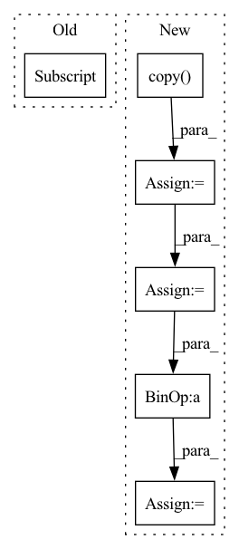

Pattern ID :14520

Before Change
df_val.append(df.reset_index(drop=True))
else:
df_train.append(df[df["ds"] < threshold_time_stamp].reset_index(drop=True))
df_val.append(df[df["ds"] >= threshold_time_stamp].reset_index(drop=True))
return df_train, df_val
After Change
elif df_dict[key]["ds"].min() > threshold_time_stamp:
df_val[key] = df_dict[key].copy(deep=True).reset_index(drop=True)
else:
df = df_dict[key].copy(deep=True)
n_train = len(df[df["ds"] < threshold_time_stamp])
split_idx_train = n_train + n_lags + n_forecasts - 1
split_idx_val = split_idx_train - n_lags if inputs_overbleed else split_idx_train
df_train[key] = df.copy(deep=True).iloc[:split_idx_train].reset_index(drop=True)
df_val[key] = df.copy(deep=True).iloc[split_idx_val:].reset_index(drop=True)
In pattern: SUPERPATTERN
Frequency: 4
Non-data size: 6
Instances
Fragment ID: 47843803
Project Name: ourownstory/neural_prophet
Commit Name: 6619741f934957dff2a7fa4ff66620772d41471f
Time: 2022-02-14
Author: ourownstory@users.noreply.github.com
File Name: neuralprophet/df_utils.py
M Class Name: AnonimousClass
N Class Name: AnonimousClass
M Method Name: split_considering_timestamp(5)
N Method Name: split_considering_timestamp(2)
M Parent Class:
N Parent Class:
M File Name: neuralprophet/df_utils.py
N File Name: neuralprophet/df_utils.py
M Start Line: 500
M End Line: 510
N Start Line: 526
N End Line: 552
'>
Before Change
immutables = data.immutables
df_decoded_cfs = data.inverse_transform(counterfactuals.copy())
df_decoded_cfs[data.continuous] = df_decoded_cfs[data.continuous].astype("int64")
df_decoded_cfs = df_decoded_cfs[immutables]
df_factuals = data.inverse_transform(factuals)
After Change
df_decoded_cfs = data.inverse_transform(counterfactuals.copy())
df_factuals = data.inverse_transform(factuals.copy())
// check continuous using np.isclose to allow for very small numerical differences
cfs_continuous_immutable = df_decoded_cfs[
intersection(data.continuous, data.immutables)
]
factual_continuous_immutable = df_factuals[
intersection(data.continuous, data.immutables)
]
continuous_violations = np.invert(
np.isclose(cfs_continuous_immutable, factual_continuous_immutable)
)
continuous_violations = np.sum(continuous_violations, axis=1).reshape(
(-1, 1)
) // sum over features
// check categorical by boolean comparison
cfs_categorical_immutable = df_decoded_cfs[
intersection(data.categorical, data.immutables)
]
factual_categorical_immutable = df_factuals[
intersection(data.categorical, data.immutables)
]
categorical_violations = cfs_categorical_immutable != factual_categorical_immutable
categorical_violations = np.sum(categorical_violations.values, axis=1).reshape(
(-1, 1)
) // sum over features
total_violations = continuous_violations + categorical_violations
return total_violations.tolist()
'>
Fragment ID: 47843794
Project Name: indyfree/carla
Commit Name: fb54e70b71f20d0049131c3def1fa83a78132bfe
Time: 2022-04-21
Author: johanheuvel5@gmail.com
File Name: carla/evaluation/violations.py
M Class Name: AnonimousClass
N Class Name: AnonimousClass
M Method Name: constraint_violation(3)
N Method Name: constraint_violation(3)
M Parent Class:
N Parent Class:
M File Name: carla/evaluation/violations.py
N File Name: carla/evaluation/violations.py
M Start Line: 25
M End Line: 39
N Start Line: 29
N End Line: 61
'>
Before Change
// todo: add indicator about how many encodes
categoricals = data[self.categoricals].to_numpy(np.long)
reals = data[self.reals].to_numpy(dtype=np.float32)
target = data[self.target].to_numpy(dtype=np.float32)[-self.max_prediction_length :]
return dict(x_cat=categoricals, x_cont=reals), target
After Change
return self.data_index.shape[0]
def __getitem__(self, idx):
data = self.data.iloc[self.data_index.index_start.iloc[idx] : self.data_index.index_end.iloc[idx] + 1].copy()
// todo: handle missings
// todo: randomize for augmentation
target = data["__target__"].to_numpy(dtype=np.float32)
encode_length = min(len(target) - self.max_prediction_length, self.max_encode_length)
decode_length = len(target) - encode_length
if self.add_relative_time_idx:
data["relative_time_idx"] = np.arange(-encode_length, decode_length, dtype=float) / self.max_encode_length
categoricals = data[self.categoricals].to_numpy(np.long)
reals = data[self.reals + ["__target__"]].to_numpy(dtype=np.float32)
'>
Fragment ID: 47844082
Project Name: jdb78/pytorch-forecasting
Commit Name: 46bc0297382772fd6a81d5657451c523925371be
Time: 2020-06-21
Author: beitner.jan@bcg.com
File Name: temporal_fusion_transformer_pytorch/data.py
M Class Name: TimeSeriesDataSet
N Class Name: TimeSeriesDataSet
M Method Name: __getitem__(2)
N Method Name: __getitem__(2)
M Parent Class: Dataset
N Parent Class: Dataset
M File Name: temporal_fusion_transformer_pytorch/data.py
N File Name: temporal_fusion_transformer_pytorch/data.py
M Start Line: 133
M End Line: 140
N Start Line: 146
N End Line: 159